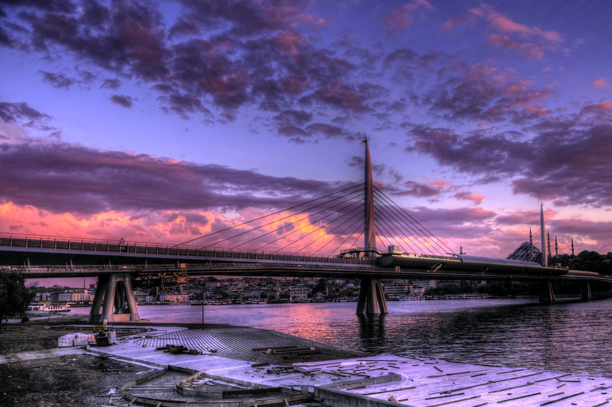
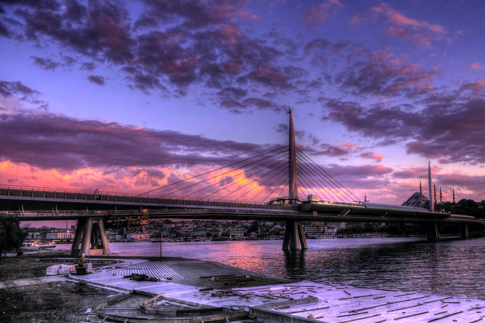
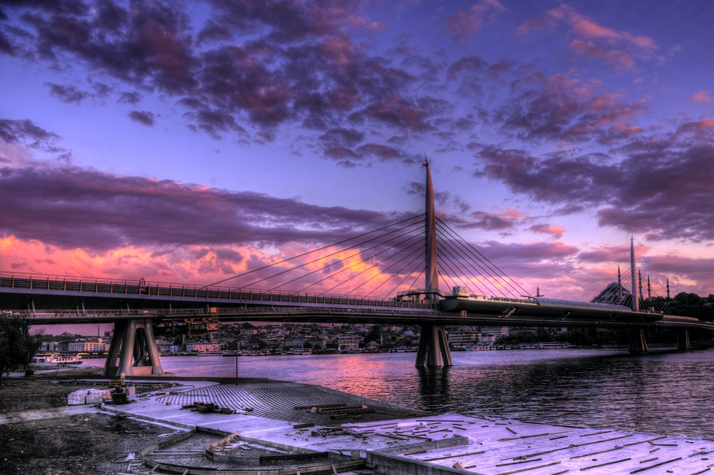
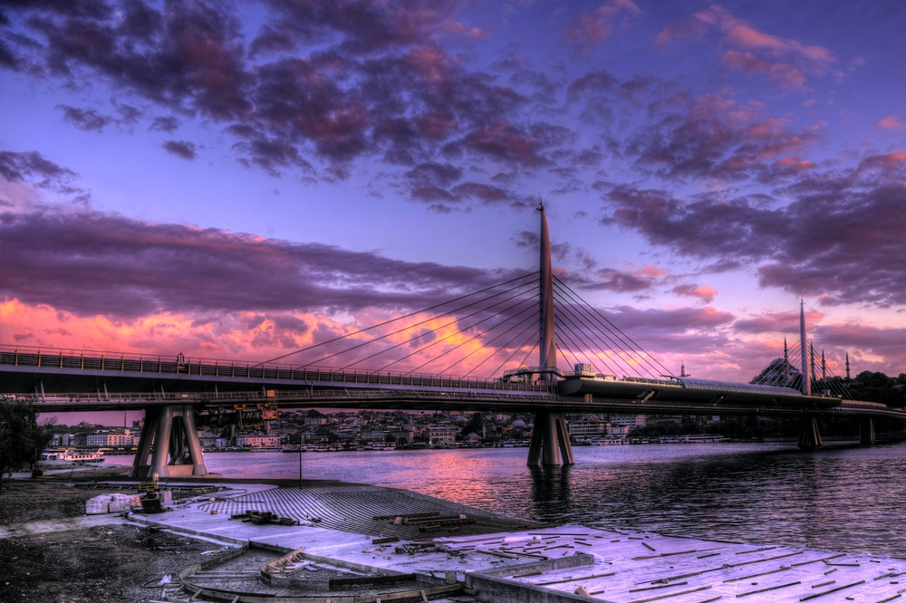

Istanbul, formerly known as Byzantium and Constantinople, is the most populous city in Turkey and the country's economic, cultural and historic center. Istanbul is a transcontinental city in Eurasia, straddling the Bosporus strait (which separates Europe and Asia) between the Sea of Marmara and the Black Sea. Its commercial and historical center lies on the European side and about a third of its population lives in suburbs on the Asian side of the Bosporus. With a total population of around fifteen million residents in its metropolitan area, Istanbul is one of the world's largest cities by population, ranking as the world's seventh-largest city proper and the largest city in Europe. The city is the administrative centre of the Istanbul Metropolitan Municipality (coterminous with Istanbul Province).
Istanbul has numerous shopping centers, from the historic to the modern. The Grand Bazaar, in operation since 1461, is among the world's oldest and largest covered markets. Mahmutpasha Bazaar is an open-air market extending between the Grand Bazaar and the Egyptian Bazaar, which has been Istanbul's major spice market since 1660. Galleria Ataköy ushered in the age of modern shopping malls in Turkey when it opened in 1987. Since then, malls have become major shopping centers outside the historic peninsula. Akmerkez was awarded the titles of "Europe's best" and "World's best" shopping mall by the International Council of Shopping Centers in 1995 and 1996; Istanbul Cevahir has been one of the continent's largest since opening in 2005; Kanyon won the Cityscape Architectural Review Award in the Commercial Built category in 2006. İstinye Park in İstinye and Zorlu Center near Levent are among the newest malls which include the stores of the world's top fashion brands. Abdi İpekçi Street in Nişantaşı and Bağdat Avenue on the Anatolian side of the city have evolved into high-end shopping districts.
Choose from the packages that we offer so that you can plan for your trip.
Show Packages